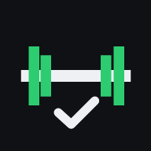

Seu treino de olho na postura
No Safari, toque em Compartilhar (quadrado com seta) e depois em Adicionar à Tela de Início. O app passa a abrir em tela cheia.
Nenhuma série ainda.
Protótipo de teste. O app é um apoio e não substitui a orientação de um profissional de educação física.